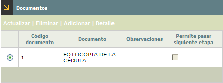
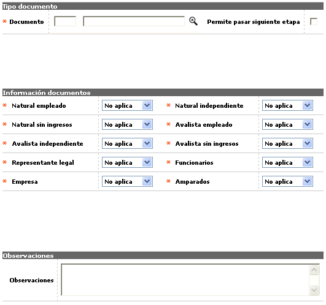
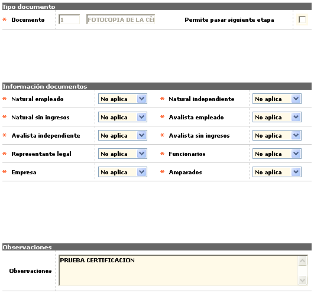

Parámetros solicitudes por producto
Documentos: Conjunto de campos en los que se determinan los documentos que pueden ser requeridos en cada una de las etapas parametrizadas y se les asigna la característica de obligatoriedad o no acorde al tipo de persona (natural, jurídica, avalista) y su condición (empleado, sin ingresos, independiente); así mismo se determina si su incumplimiento implica el poder pasar a la siguiente etapa o no, de lo cual queda rastro histórico.
El formulario contiene las opciones Actualizar, Eliminar, Adicionar, y Detalle. Adicionalmente, tiene un botón en la parte superior para volver al formulario anterior: Etapas.

Adicionar: Si el usuario invoca la opción Adicionar se despliega un formulario con los siguientes campos:

Documento |
Campo que posee lista de valores poblada en la opción Documentos de los parámetros de solicitudes, de la que debe seleccionarse el o los diferentes documentos que se requieren anexar a la solicitud. |
Permite pasar siguente etapa |
Campo en el que se indica si el incumplimiento del requisito, (la no entrega del documento respectivo a la entidad), impide pasar a la siguiente etapa o no. |
Natural empleado / Natural independiente / Natural sin ingresos / Avalista empleado / Avalista independiente / Avalista sin ingresos / Representante legal / Funcionarios / Empresa / Amparados |
Este conjunto de campos permiten indicar para cada uno de los tipos de documento seleccionado en el campo anterior, la clase de restricción o condición que debe cumplir en relación directa al tipo de persona y la situación de la misma, asociadas a la solicitud. Las opciones mostradas son No aplica, Obligatorio, y Opcional. |
Observaciones |
En este campo se pueden registrar notas relevantes que le brinden elementos de juicio a los usuarios del sistema en casos especiales. |
Actualizar: Si el usuario invoca la opción Actualizar se despliega un nuevo formulario en el cual el único campo no modificable es Documento.

Solicitudes | Cupos extendidos | Relaciones laborales | Cupos mín y máx por rango |Copiar parámetros